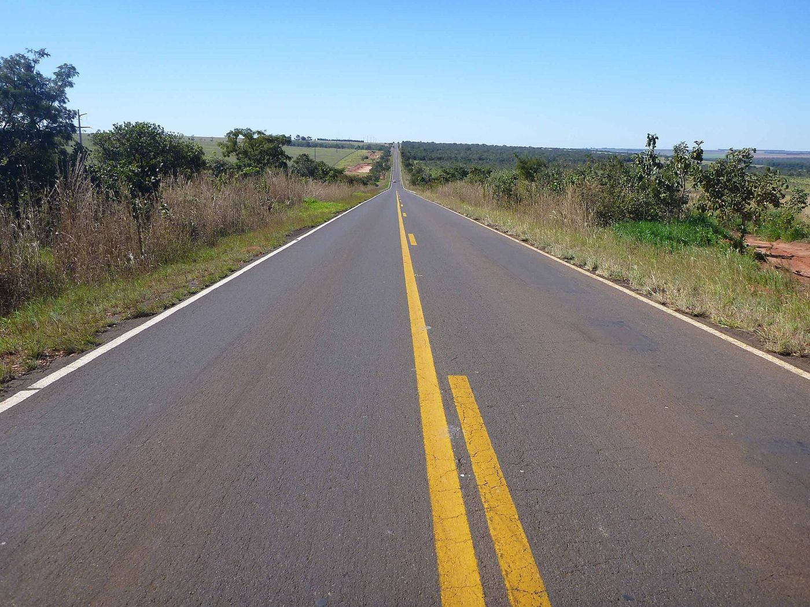
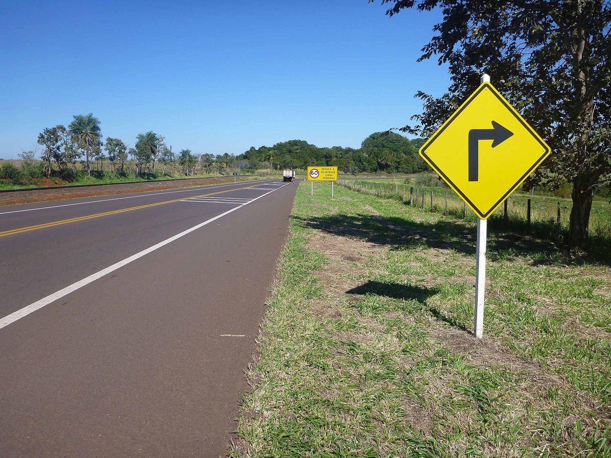
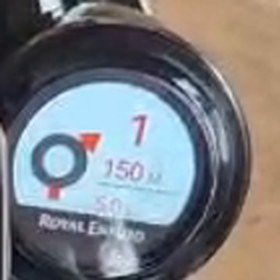
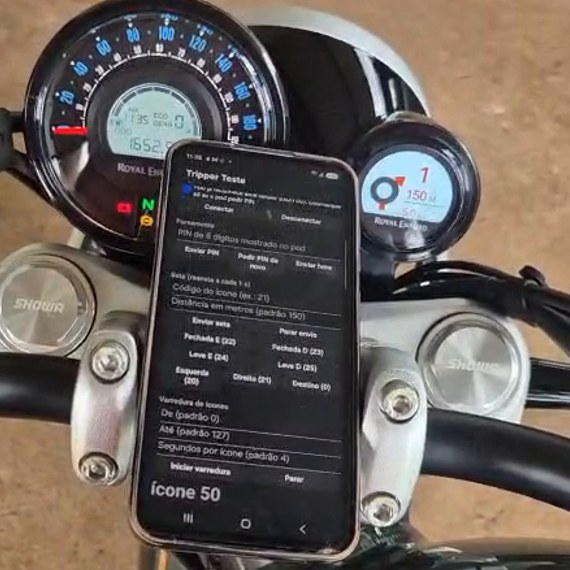
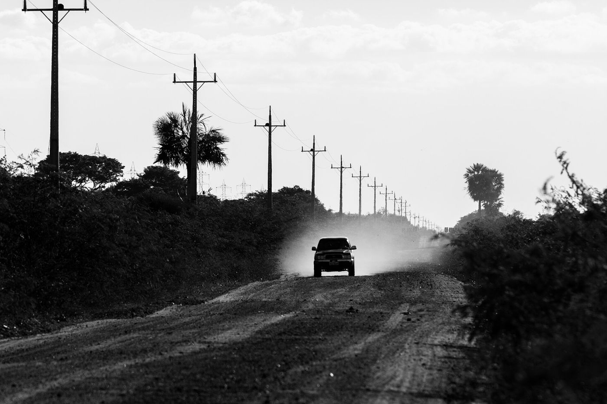

Mensal
Para quem prefere apoiar mês a mês.
Backup automático ao terminar uma rota, ao salvar um roteiro e uma vez por dia, guardando as 3 últimas versões. Restaurar num celular novo em poucos toques.
R$ 10por mês
Como colaborarJuna Road Trip é um app Android gratuito que manda as setas, a distância e os alertas da navegação para o painel redondo Tripper da Super Meteor 650, por Bluetooth, sem mexer na moto.
A voz diz: “Em 300 metros, vire à direita.”
Toque e veja o que aparece no Trip.
Calcula a rota mesmo sem sinal na estrada   
Sem o Trip? O Juna funciona em qualquer moto como auxiliar de viagem: voz, alertas, chuva, postos e roteiro por trechos. Baixar grátis

O app não está na Play Store: você baixa o arquivo direto daqui. O Android pede algumas confirmações na primeira vez. É normal.
Abra o link no celular, de preferência no Chrome. Se avisar que o arquivo pode ser perigoso, toque em Baixar mesmo assim.
Toque no arquivo baixado. Se pedir, ligue Permitir desta fonte e depois Instalar. Se o Play Protect avisar, toque em Instalar mesmo assim.
Abra o app, aceite as permissões e, com a moto ligada, toque em Conexão > Conectar Trip. Na primeira vez, digite o PIN de 6 dígitos que aparece no painel.
Nos Samsung mais novos, desligue antes Configurações > Segurança e privacidade > Proteção automática contra bloqueio, instale e ligue de novo depois. O passo a passo completo, com cada mensagem do Android, está no guia da versão atual.
O app é e continua grátis. Quem colabora guarda roteiros, diário e ajustes na nuvem e recupera tudo ao trocar de celular ou reinstalar.
Para quem prefere apoiar mês a mês.
Backup automático ao terminar uma rota, ao salvar um roteiro e uma vez por dia, guardando as 3 últimas versões. Restaurar num celular novo em poucos toques.
R$ 10por mês
Como colaborarUm Pix por ano, com dois meses de desconto.
Tudo do mensal, sem lembrar de renovar todo mês. Se a colaboração vencer, o backup automático pausa, mas o que já está na nuvem continua lá para você restaurar.
R$ 100por ano
Como colaborarEm Ajustes > Apoie o projeto o app copia o Pix para você: R$ 10 todo mês ou R$ 100 uma vez por ano.
Escreva os dois na mensagem do Pix. O e-mail entra na lista de colaboradores.
Em Ajustes > Backup na nuvem > Entrar com e-mail chega um código de 6 dígitos no seu e-mail. Sem senha para lembrar.
Contribuições menores continuam muito bem-vindas e podem aparecer no mural de colaboradores do app; elas só não incluem o backup.
Toda versão do Juna é assinada com a mesma chave. Assim o Android só aceita atualizar o app com outra versão feita por nós, e um arquivo alterado por outra pessoa não instala por cima. Baixe sempre por esta página ou pelo GitHub do projeto.
Quem entende de Android pode conferir a impressão digital (SHA-256) do certificado:
23:C0:10:47:35:75:F8:29:E0:24:4C:01:79:75:24:A5:94:CF:2C:1F:D7:4A:41:25:E8:6E:EB:09:5B:EC:D0:7C
Ver a versão atual no GitHub

Foi feito e testado na Super Meteor 650. Deve funcionar nas motos com o mesmo painel Tripper (Meteor 350, Shotgun, Classic 650, Interceptor e Continental GT 650 com o acessório). Sem o Trip, funciona em qualquer moto como auxiliar de viagem, com voz e alertas.
Não. É um app independente, feito por motociclistas, sem ligação com a Royal Enfield. Ele só conversa com o painel por Bluetooth, como o app oficial, e nunca altera a moto nem o software dela.
Para navegar, não: baixe o mapa da sua região no Wi-Fi em Ajustes > Mapas. A internet serve para buscar endereços, ver a chuva e fazer o backup.
Nada. O app é gratuito e sem anúncios. Quem quiser pode apoiar pelo Pix; com R$ 10 por mês ou R$ 100 por ano você ganha o backup na nuvem.
O app avisa sozinho quando sai versão nova, ou em Ajustes > Sobre o app > Procurar versão nova. Toque em Baixar e depois em Atualizar. Ajustes, mapas e viagens continuam.
O aviso aparece porque o app não veio da Play Store. Baixe só por esta página ou pelo GitHub do projeto: toda versão oficial tem a mesma assinatura (veja acima).
No app: Ajustes > Backup na nuvem > Apagar meus dados da nuvem. Sem o app, peça por e-mail. O passo a passo está na página de privacidade.